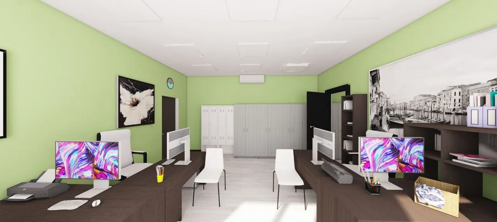
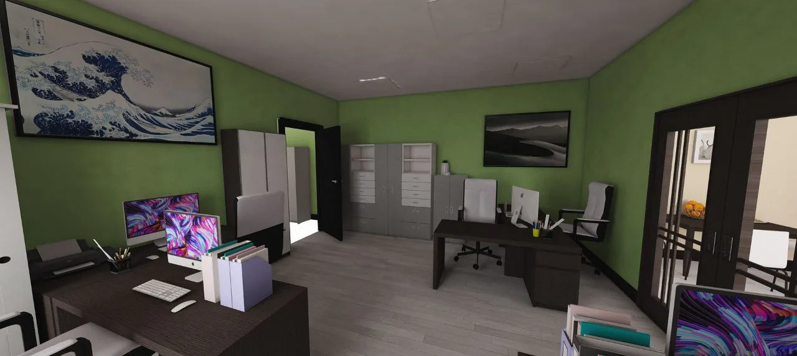
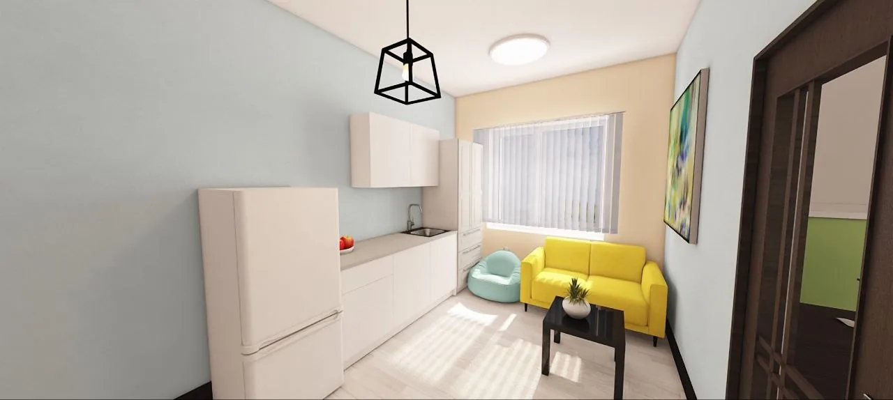
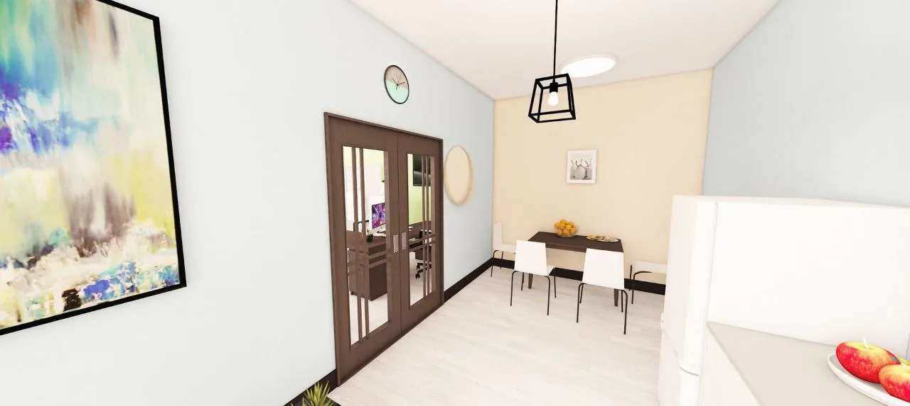
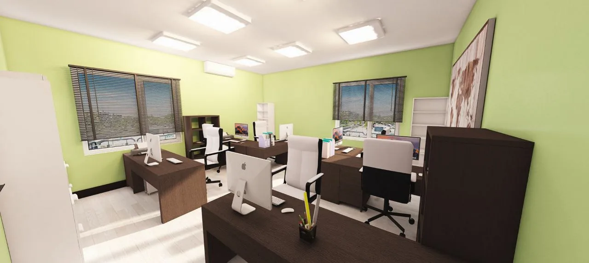
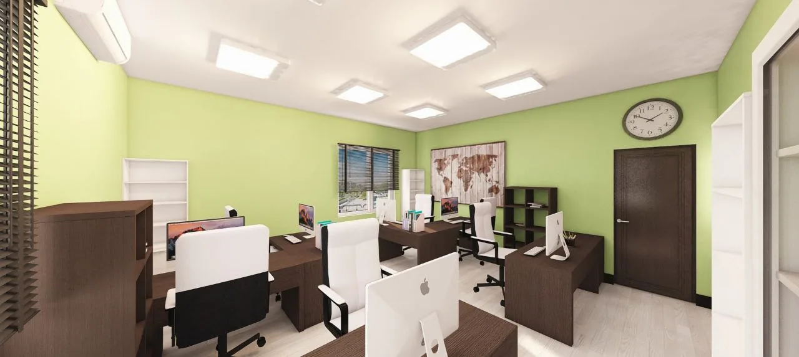
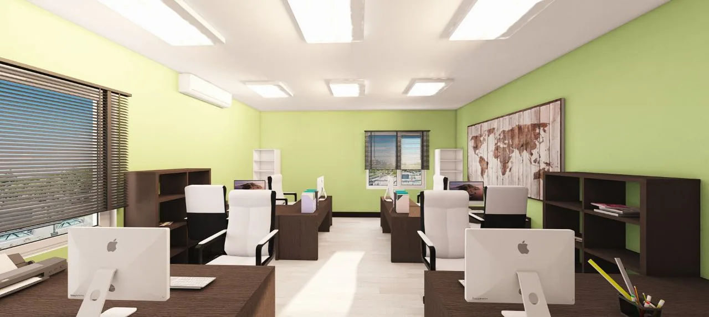
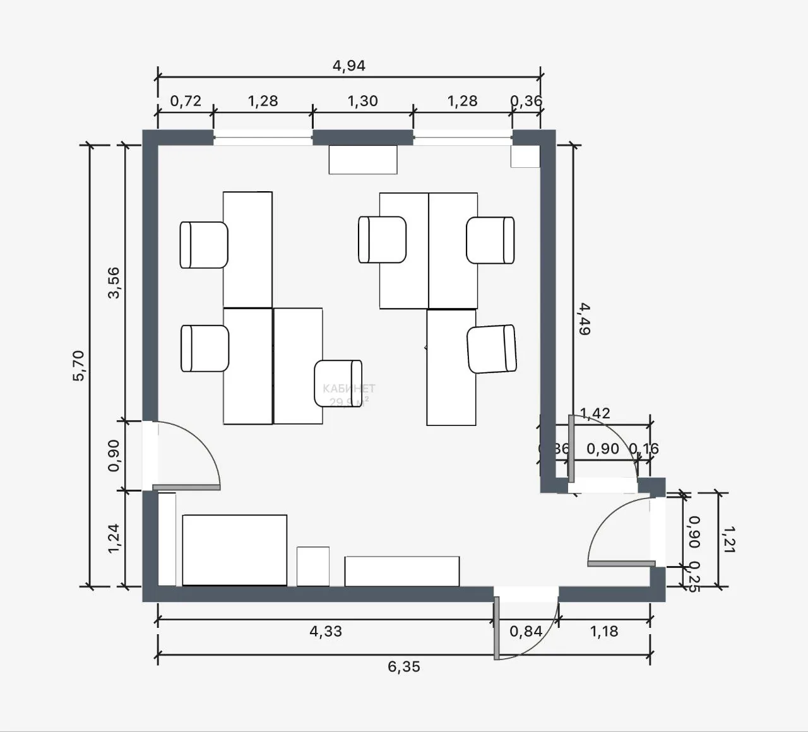
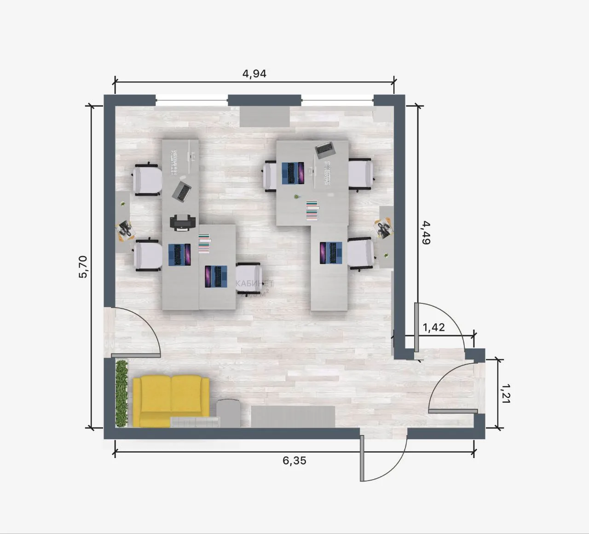

РЖД
РЖД кабинет №32
Подборка интерьерных визуализаций и планов для проекта РЖД кабинет №32.
Визуализации
Интерьерные материалы
Подборка интерьерных визуализаций и планов для проекта РЖД кабинет №32.

Галерея проекта
Изображения на этой странице приходят из `media/web/`, а не из временного intake-архива.








